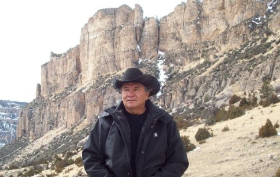

P.O. Box 155
Kyle, South Dakota 57752
(605) 455-2343
South Dakota Tourism Award Winner!
Kyle, South Dakota 57752
(605) 455-2343
South Dakota Tourism Award Winner!
White Thunder Ranch
Trail Rides

Trail Rides on
Beautiful Watogla Lakota Ponies
Tours
See the Pine Ridge Indian Reservations
and surrounding regions
Accommodations

Cabins and
Teepees
Photos

Be sure to view the
Wounded Knee 2012 slideshow!
Contact Us

Contact us
for more Information
whitethunderranch@yahoo.com
Learn about the history, culture, and geology of the Pine Ridge Indian Reservation and surrounding regions.
Learn about the history, culture, and geology of the Pine Ridge Indian Reservation and surrounding regions.